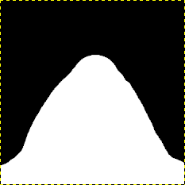
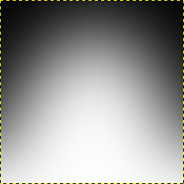
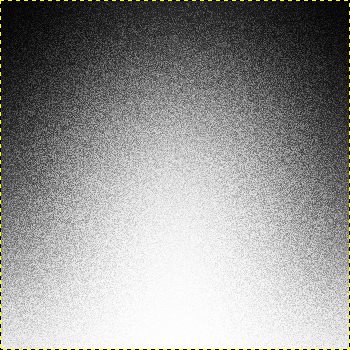
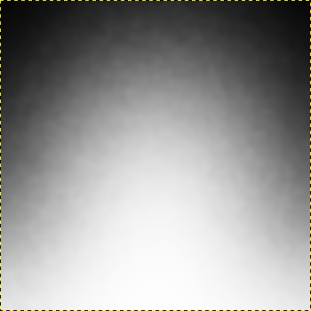
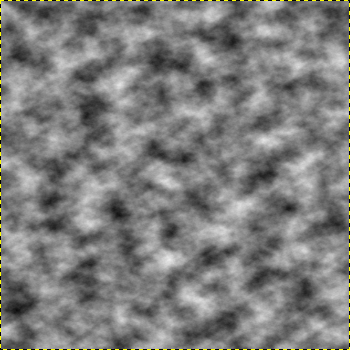
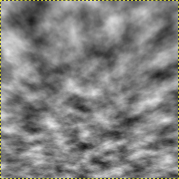
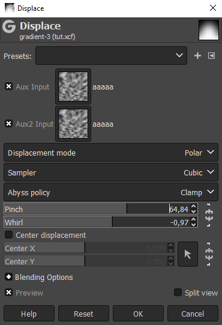
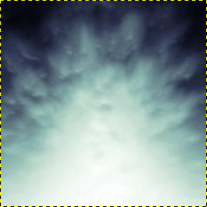
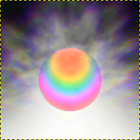

make a gradient.
you can use a gradient tool or gaussian blur.
 
add texture with noise.
this one is the "spread" noise on gimp.
it scatters the pixels around.

blur it together.

create a cloudy texture.
you can try any kind of perlin noise.
this one is the "solid noise" filter on gimp.

distort it to your liking.
this can be to add perspective
or shape the cloudy texture.

use the cloudy texture as a displacement map on the gradient.
you can tweak the settings to make the texture more or less apparent.

done.
this is the result.
you can then do whatever you want with it.
 